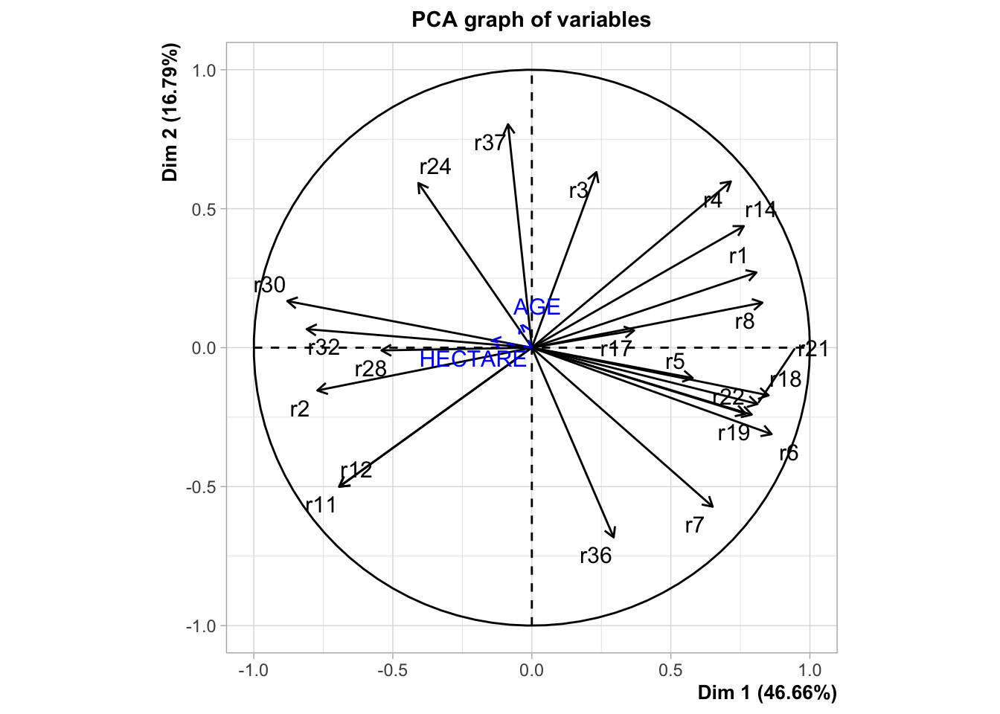
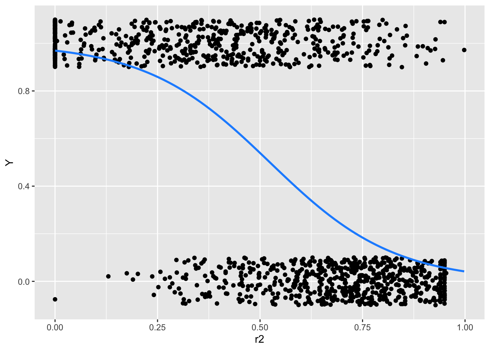
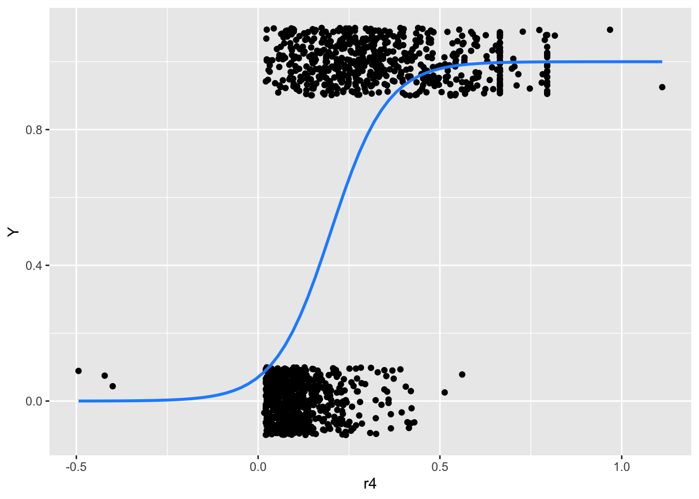
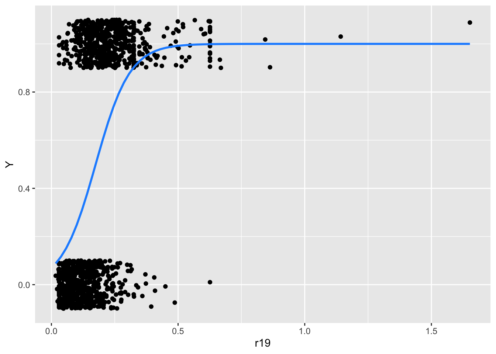
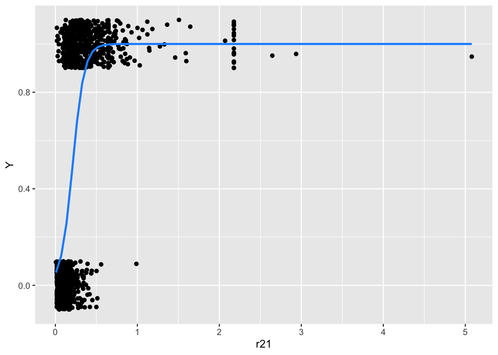
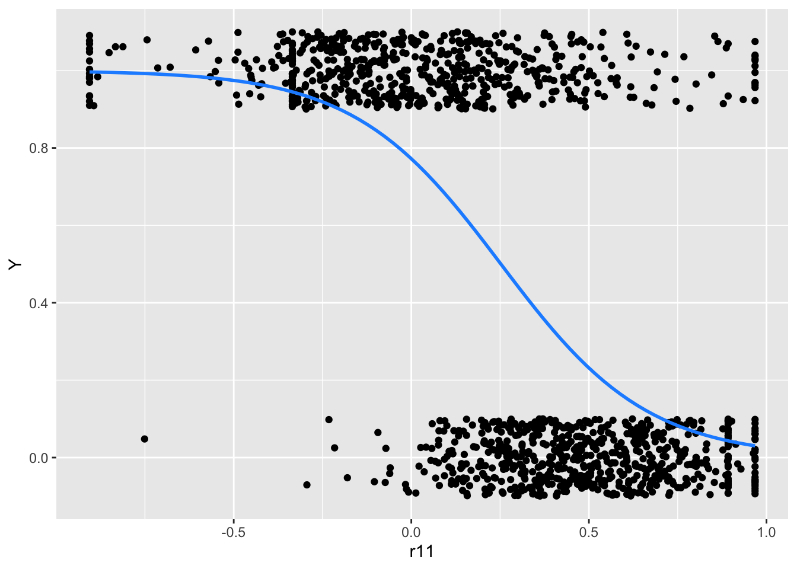
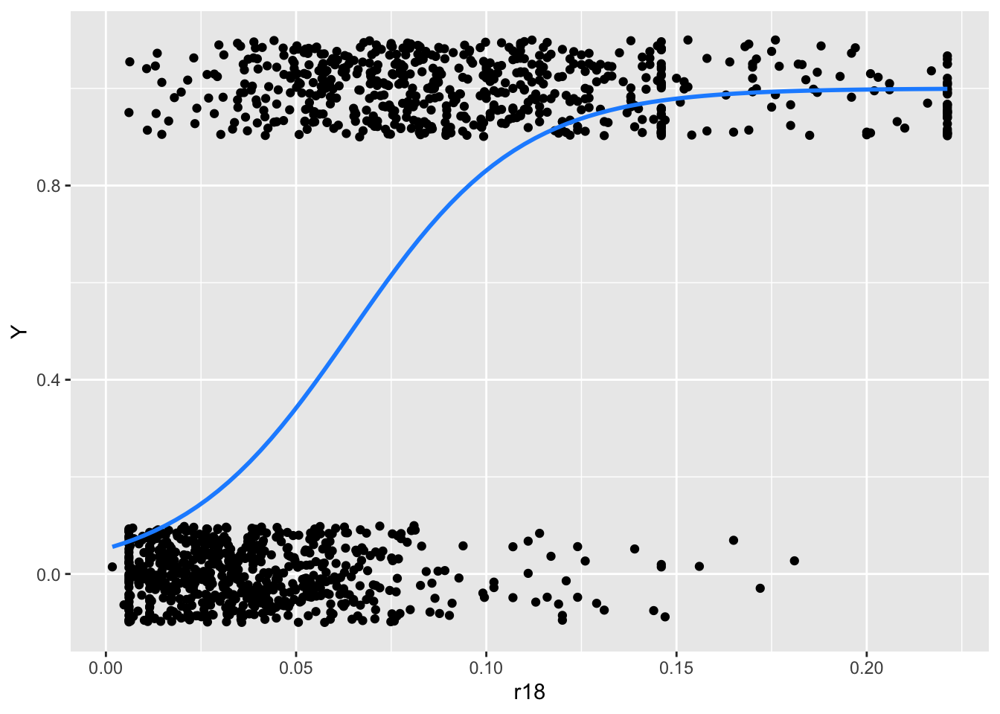

Code
1 + 1[1] 2Quarto enables you to weave together content and executable code into a finished document. To learn more about Quarto see https://quarto.org.
When you click the Render button a document will be generated that includes both content and the output of embedded code. You can embed code like this:
1 + 1[1] 2You can add options to executable code like this
[1] 4The echo: false option disables the printing of code (only output is displayed).
Loading Desbois data and first glimpse at it:
library(tidyverse)
# package used to import spss file
library(foreign)
don_desbois <- read.spss("../data/presentation_data/Agriculture Farm Lending/desbois.sav", to.data.frame = TRUE) %>% as_tibble()
glimpse(don_desbois)Rows: 1,260
Columns: 30
$ CNTY <fct> Eure, Eure, Eure, Eure, Eure, Eure, Eure, Eure, Eure, Eure, Eu…
$ DIFF <fct> healthy, healthy, healthy, healthy, healthy, healthy, healthy,…
$ STATUS <fct> Entreprise individuelle, Entreprise individuelle, Entreprise i…
$ HECTARE <dbl> 166, 101, 138, 166, 137, 107, 100, 69, 176, 177, 108, 123, 87,…
$ ToF <fct> cereals, cereals, dairy farm, cereals, mixed livestock, cereal…
$ OWNLAND <fct> yes, no, yes, yes, yes, yes, no, yes, yes, yes, yes, yes, yes,…
$ AGE <dbl> 35, 35, 42, 50, 33, 45, 34, 30, 44, 39, 40, 40, 40, 52, 49, 44…
$ HARVEST <fct> 1988, 1988, 1988, 1988, 1988, 1988, 1988, 1988, 1988, 1988, 19…
$ r1 <dbl> 0.449, 0.450, 0.332, 0.363, 0.440, 0.306, 0.717, 0.566, 0.145,…
$ r2 <dbl> 0.622, 0.617, 0.819, 0.733, 0.650, 0.755, 0.320, 0.465, 0.881,…
$ r3 <dbl> 0.25500, 0.24110, 0.55680, 0.35960, 0.31420, 0.26350, 0.16280,…
$ r4 <dbl> 0.11450, 0.10840, 0.18510, 0.13050, 0.13820, 0.08055, 0.11680,…
$ r5 <dbl> 0.334, 0.341, 0.147, 0.232, 0.302, 0.225, 0.601, 0.499, 0.115,…
$ r6 <dbl> 0.785, 0.518, 0.700, 0.773, 0.846, 0.709, 0.894, 0.863, 0.439,…
$ r7 <dbl> 0.585, 0.393, 0.310, 0.495, 0.580, 0.523, 0.748, 0.761, 0.348,…
$ r8 <dbl> 0.20020, 0.12500, 0.38950, 0.27790, 0.26580, 0.18700, 0.14550,…
$ r11 <dbl> 0.6628, 0.7098, 0.4142, 0.4661, 0.7715, 0.8178, 0.6598, 0.6619…
$ r12 <dbl> 1.3698, 1.2534, 0.6370, 1.0698, 1.4752, 1.4682, 1.1018, 1.2360…
$ r14 <dbl> 0.23200, 0.14970, 0.48470, 0.37350, 0.25630, 0.18610, 0.18070,…
$ r17 <dbl> 0.0884, 0.0671, 0.0445, 0.0621, 0.0489, 0.0243, 0.0352, 0.0879…
$ r18 <dbl> 0.0694, 0.0348, 0.0311, 0.0480, 0.0414, 0.0173, 0.0315, 0.0758…
$ r19 <dbl> 0.1660, 0.1360, 0.1030, 0.1080, 0.1270, 0.0652, 0.1290, 0.2400…
$ r21 <dbl> 0.1340, 0.0802, 0.0890, 0.0851, 0.0838, 0.0390, 0.0784, 0.1630…
$ r22 <dbl> 0.3219, 0.3133, 0.2945, 0.1909, 0.2567, 0.1472, 0.3211, 0.5170…
$ r24 <dbl> 0.295, 0.365, 0.166, 0.265, 0.257, 0.191, 0.322, 0.305, 0.180,…
$ r28 <dbl> 0.475, 0.434, 0.350, 0.475, 0.475, 0.443, 0.401, 0.464, 0.475,…
$ r30 <dbl> 0.35000, 0.29780, 0.24680, 0.37590, 0.36690, 0.37590, 0.27240,…
$ r32 <dbl> 0.4313, 0.3989, 0.3187, 0.4313, 0.4313, 0.4257, 0.3697, 0.3886…
$ r36 <dbl> 0.886, 0.351, 1.300, 1.385, 0.886, 1.316, 0.441, 0.761, 2.147,…
$ r37 <dbl> 0.572, 0.867, 0.475, 0.470, 0.520, 0.431, 0.803, 0.656, 0.359,…Replacing for convenience DIFF target by factor Y with O (healthy) or 1 (failing):
don_desbois <- don_desbois %>%
mutate(Y = as.factor(if_else(DIFF=='healthy', 0, 1)), DIFF = NULL,
.before = everything())Your turn to play
Using the data set at hand, try to retrieve some findings of the Desbois case study.
You might need R packages FactoMineR, ROCR and MASS::lda function to perform the tasks (“YOUR CODE HERE”) described in the following slides.
Each time I show an example of what is expected.
I suggest that you start using Quarto (setup here) to code and track/publish your results. It will be requested for your projects (it is very similar to RMarkdown). It integrates perfectly with RStudio.
First perform PCA on financial ratios (use for example package FactoMineR), then display correlations between ratios and the two first principal components :
########## YOUR CODE HERE ###################### More details here http://factominer.free.fr/factomethods/principal-components-analysis.html
res.pca = FactoMineR::PCA(don_desbois,
scale.unit = TRUE,
quanti.sup = c(4, 7), # HECTARE / AGE excluded from Desbois analysis
quali.sup = c(1, 2, 3, 5, 6, 8),
ncp = 5,
graph=FALSE)
plot(res.pca, choix = "var")
# FactoMineR::dimdesc(res.pca, axes=c(1,2))To be compared with article Figure 1
Following Desbois path, visualize the farm holdings in data set as a bivariate plot on the first two components of PCA (based on financial ratios), use variable Y (0=”healthy”; 1=”failing”) to colour your observations:
########## YOUR CODE HERE ###################### Similar to Desbois Fig 2.
# Plot of the farm holdings in the first factorial plane of the normalized PCA based on financial ratios
# with illustrative variable Y (0=”healthy”; 1=”failing”)
FactoMineR::plot.PCA(res.pca, axes=c(1, 2), choix="ind", habillage=1, invisible = c("quali"))# FactoMineR::plot.PCA(res.pca, axes=c(1, 2), choix="ind", habillage=1, invisible = c("ind"))To be compared with article Figure 2
It strikes Desbois that the PCA (even if not a discriminative/scoring procedure), seems to do a rather good job identifying defaulting farms on the training set.
Disclaimer: in general it won’t be necessarily the case as PCA operates only on the predictors without “knowledge” of target variable.
As suggested by Desbois, extract the first principal component (some help here), and use it as a Scoring function.
Today it will allow us to use a first Scoring function without introducing the Logistic Regression that you have not yet studied in class.
########## YOUR CODE HERE ###################### https://stats.stackexchange.com/questions/460787/pcr-after-pca-with-mixed-data-how-to-extract-export-the-pcs-as-new-variables-i
# https://stats.stackexchange.com/questions/494866/how-to-explain-the-numerical-discrepancy-between-factominerpca-and-the-svd
# https://stats.stackexchange.com/questions/134282/relationship-between-svd-and-pca-how-to-use-svd-to-perform-pca
# Extracting first five Principal components from FactomineR object
# Using FactomineR 'notation' (U,sv,V)
# (X nxp matrix of Desbois observations (only r1...r37), SVD decomposition X = U %*% diag(vs) %*% t(V),
# where U: unitary matrix of left-singular vectors, vs: singular values, V: unitary matrix of left-singular vectors)
# SVD object from FactomineR res.pca$svd
# Principal components X %*% V = U %*% diag(vs) %*% t(V) %*% V = U %*% diag(vs)
principal_components_1 <- res.pca$svd$U %*% diag(res.pca$svd$vs[1:5])
# Can also be directly extracted from:
principal_components_2 <- res.pca$ind$coord
# Or using PC = X %*% V (where X has been centered and scaled
# base R 'scale' uses a different scaling factor than FactomineR hence sqrt(n / n-1) correction)
X_for_PCA <- don_desbois %>% select(r1:r37) %>% as.matrix()
principal_components_3 <- sqrt(nrow(X_for_PCA) / (nrow(X_for_PCA) - 1)) * scale(X_for_PCA) %*% res.pca$svd$V
# perform svd using base R on scaled matrix
s <- svd(scale(X_for_PCA))
# correct for negative signs
s$v[, c(2, 3, 4, 5)] <- s$v[, c(2, 3, 4, 5)] * -1
V <- s$v[,1:5]
principal_components_4 <- sqrt(nrow(X_for_PCA) / (nrow(X_for_PCA) - 1)) * scale(X_for_PCA) %*% VBelow the score for each observation is the x-axis or first principal component:
naive_score <- bind_cols(don_desbois, as_tibble(principal_components_2))
ggplot(naive_score) +
geom_point(aes(x = Dim.1, y = Dim.2, col = Y)) +
scale_colour_manual(values = c("dodgerblue", "orange"))Looking at this plot Desbois concludes that a simple classifier can be devised using the first PCA coordinate as a classifier (setting a threshold at \(PC_1 > 0.02\)):
Going further than Desbois and for illustrative purposes only, use \(PC_1\) as a very naive Scoring function.
Plot below the ROC curve as defined in the Scoring part of the presentation (you can use package ROCR, but a simple for-loop for different cutoff values \(s\) will do the job):
########## YOUR CODE HERE #####################library("ROCR")
# naive score
pred <- prediction(naive_score$Dim.1, naive_score$Y)
perf <- performance(pred, measure = "tpr", x.measure = "fpr")
plot(perf, main="ROC curve", xlab="Specificity",
ylab="Sensitivity", col = "darkorange",
print.cutoffs.at = c(-2.5,-1,0.00,1,5),
cutoff.label.function = function(x) {paste0(" s = ",round(x,2))})
abline(0, 1) #add a 45 degree lineWe follow closely the case study, but we will see that ROC curves are usually evaluated on a hold-out data set.
Then compare with a Scoring function obtained with Linear Discriminant Analysis (LDA). For a reminder on LDA see for example Hastie et al. (2009, Chapter 4.3 LDA, p. 103-111).
You can use Desbois variables selected in the article by a stepwise procedure (using Wilk’s lambda1). Selected variables are:
So basically you can fit LDA with r2+r3+r7+r14+r17+r18+r21+r32+r36 as predictors (I use R formula notation to ease your copy-paste).
Fit LDA (MASS::lda) with model specification of your choice. Then display model coefficients:
########## YOUR CODE HERE #####################lda_desbois <- MASS::lda(Y~r2+r3+r7+r14+r17+r18+r21+r32+r36, data=don_desbois)
round(lda_desbois$scaling,3) LD1
r2 -2.542
r3 2.398
r7 1.099
r14 0.604
r17 18.702
r18 -6.798
r21 -0.622
r32 -4.163
r36 0.192Now compare the LDA Scoring function with the naive Score build with first component of PCA using a ROC curve (on training set):
########## YOUR CODE HERE ###################### for ROCR
labels_desbois <- don_desbois$Y
# naive score
predictions_naive_score <- naive_score$Dim.1
naive_score_group <- naive_score %>%
group_by(Y) %>%
summarize(mean_score = mean(Dim.1), n = n())
cutoff_naive <- mean(naive_score_group$mean_score)
pred <- prediction(predictions_naive_score, labels_desbois)
perf <- performance(pred, measure = "tpr", x.measure = "fpr")
plot(perf, main="ROC curve Admissions", xlab="Specificity",
ylab="Sensitivity", col = "darkolivegreen",
print.cutoffs.at = c(cutoff_naive),
cutoff.label.function = function(x) {paste0(" s = ",round(x,2))})
abline(0, 1) #add a 45 degree line
# lda
predictions_lda <- predict(lda_desbois)$x
lda_score_group <- bind_cols(don_desbois, predictions_lda) %>%
group_by(Y) %>%
summarize(mean_score = mean(LD1), n = n())
cutoff_lda <- mean(lda_score_group$mean_score)
pred <- prediction(predictions_lda, labels_desbois)
perf <- performance(pred, measure = "tpr", x.measure = "fpr")
plot(perf, add = TRUE, main="ROC curve Admissions", xlab="Specificity",
ylab="Sensitivity", col = "plum4",
print.cutoffs.at = c(cutoff_lda),
cutoff.label.function = function(x) {paste0(" s = ",round(x,2))})
legend(0.6,0.6,
c('naive - PCA', 'LDA'),
col=c("darkolivegreen", "plum4"),lwd=3)
Weplot the bivariate (scatter plots) relationships between the variable of interest and the quantitative predictors:
vars_quanti <- names(don_desbois %>% select_if(is.numeric))
for(var in vars_quanti){
var <- as.name(var)
print(ggplot(don_desbois %>%
# filter(r17 <0.14) %>%
mutate(Y = as.numeric(Y)-1), aes(x=!! var,y = Y)) +
geom_jitter(height = 0.1, width = 0) +
geom_smooth(method = "glm",
formula = y ~ x,
method.args = list(family = "binomial"),
se = FALSE,
col = "dodgerblue")) # this one adda a bivariate glm fit to the plot
}







At first sight there seem to be outliers in the financial ratios values (for example r18, r19, r21). We can deal with that for example by winsorizing variables, in real life, if we were responsible for the data collection, it would be a good idea to investigate closely these outliers.
don_desbois_winsorized <- don_desbois %>%
mutate(across(r1:r37, ~ DescTools::Winsorize(.x , quantile( .x, probs = c(0.00, 0.975)))))
vars_quanti <- names(don_desbois_winsorized %>% select_if(is.numeric))
for(var in vars_quanti){
var <- as.name(var)
print(ggplot(don_desbois_winsorized %>%
# filter(r17 <0.14) %>%
mutate(Y = as.numeric(Y)-1), aes(x=!! var,y = Y)) +
geom_jitter(height = 0.1, width = 0) +
geom_smooth(method = "glm",
formula = y ~ x,
method.args = list(family = "binomial"),
se = FALSE,
col = "dodgerblue"))
}

We also show the prevalence of default for each categorical variables:
vars_quali <- names(don_desbois %>% select_if(is.factor) %>% select(-Y))
for(var in vars_quali){
var <- as.name(var)
print(ggplot(don_desbois %>%
group_by(!!var, Y) %>%
summarize(count = n()) %>%
ungroup()) +
geom_bar(aes(x = Y, y = count, fill = !!var), position="dodge",stat="identity"))
}As a very soft and intuitive introduction to logistic regression. First discretize a ratio \(r\) of your choice.
########## YOUR CODE HERE #####################class_width <- 0.01
don_desbois_binned <- don_desbois %>%
mutate(r17_bins = cut(r17, breaks = seq(0, 0.2, class_width),
right = FALSE, dig.lab = 4, include.lowest = TRUE),
min = floor(r17 / class_width) * class_width,
max = if_else(r17 == 0 , 1,
# customers with 0$ balance should belong to [0, width) class
# or be excluded
ceiling(r17 / class_width)) * class_width,
max = if_else(min==max, (ceiling(r17 / class_width) + 1) * class_width, max)) %>%
group_by(r17_bins, min, max, Y) %>%
summarize(n=n()) %>%
ungroup() %>%
pivot_wider(names_from = Y, values_from = n) %>%
replace_na(list(`0` = 0, `1` = 0)) %>%
mutate(`Mean(Y)` = round(`1` / (`1` + `0`), 4))
cat(simplermarkdown::md_table(don_desbois_binned %>% select(r17_class=r17_bins, `0`, `1`,`Mean(Y)` )))|r17_class |0 |1 |Mean(Y)|
|-----------|---|--|-------|
|[0,0.01) | 2| 0|0.0000 |
|[0.01,0.02)| 4| 2|0.3333 |
|[0.02,0.03)| 65|14|0.1772 |
|[0.03,0.04)|106|38|0.2639 |
|[0.04,0.05)|112|64|0.3636 |
|[0.05,0.06)|104|77|0.4254 |
|[0.06,0.07)| 88|93|0.5138 |
|[0.07,0.08)| 63|83|0.5685 |
|[0.08,0.09)| 49|66|0.5739 |
|[0.09,0.1) | 27|71|0.7245 |
|[0.1,0.11) | 14|42|0.7500 |
|[0.11,0.12)| 12|42|0.7778 |
|[0.12,0.13)| 7|14|0.6667 |
|[0.19,0.2] | 0| 1|1.0000 |########## YOUR CODE HERE #####################(default_occurrence <-
ggplot(don_desbois %>% mutate(Y = if_else(Y == "1", 1, 0)), aes(x=r17, y=Y)) +
geom_jitter(alpha=0.2, height=0.1) +
geom_segment(data = don_desbois_binned,
aes(x = min, xend = max, y = `Mean(Y)`, yend = `Mean(Y)`),
color = 'coral',
linewidth=1.25)) +
scale_y_continuous(breaks = c(0, 1))(default_occurrence <-
ggplot(don_desbois %>% mutate(Y = if_else(Y == "1", 1, 0)), aes(x=r17, y=Y)) +
geom_jitter(alpha=0.2, height=0.1) +
geom_smooth(method = "glm",
formula = y ~ x,
method.args = list(family = "binomial"),
se = FALSE,
col = "dodgerblue",
linetype = "dotted") +
geom_segment(data = don_desbois_binned,
aes(x = min, xend = max, y = `Mean(Y)`, yend = `Mean(Y)`),
color = 'coral',
linewidth=1.25)) +
scale_y_continuous(breaks = c(0, 1))This roughly corresponds to the intuitive introduction to the logistic regression model given in Hosmer et al. (2013) using a Coronary Heart Disease (CHD) event as \(Y\) and AGE as \(X\):

Since Logistic Regression has been briefly introduced in class, you can directly apply it to the Desbois dataset using R glm() function and compare it to (i) the naive score based on PCA and (ii) the LDA using a ROC curve. You can re-use the code provided before covering the first part of Desbois case study and adapt it to your needs.
First fit a linear regression model, we use the same set of variables as for LDA before:
glm_desbois <- glm(Y~r2+r3+r7+r14+r17+r18+r21+r32+r36,
data=don_desbois,
family = binomial(link = "logit"))
summary(glm_desbois)
Call:
glm(formula = Y ~ r2 + r3 + r7 + r14 + r17 + r18 + r21 + r32 +
r36, family = binomial(link = "logit"), data = don_desbois)
Coefficients:
Estimate Std. Error z value Pr(>|z|)
(Intercept) -3.4203 1.2834 -2.665 0.00770 **
r2 -5.2156 1.2108 -4.307 1.65e-05 ***
r3 5.8347 1.2487 4.673 2.97e-06 ***
r7 2.9003 0.9530 3.043 0.00234 **
r14 2.1470 0.4777 4.494 6.98e-06 ***
r17 45.6847 9.6836 4.718 2.38e-06 ***
r18 -24.6368 9.1127 -2.704 0.00686 **
r21 1.7335 1.9481 0.890 0.37355
r32 -5.0215 1.8907 -2.656 0.00791 **
r36 0.4494 0.3558 1.263 0.20661
---
Signif. codes: 0 '***' 0.001 '**' 0.01 '*' 0.05 '.' 0.1 ' ' 1
(Dispersion parameter for binomial family taken to be 1)
Null deviance: 1745.1 on 1259 degrees of freedom
Residual deviance: 691.3 on 1250 degrees of freedom
AIC: 711.3
Number of Fisher Scoring iterations: 8Then add to ROC curve with Naive and LDA Scores:
# for ROCR
labels_desbois <- don_desbois$Y
# naive score
predictions_naive_score <- naive_score$Dim.1
naive_score_group <- naive_score %>%
group_by(Y) %>%
summarize(mean_score = mean(Dim.1), n = n())
cutoff_naive <- mean(naive_score_group$mean_score)
pred <- prediction(predictions_naive_score, labels_desbois)
perf <- performance(pred, measure = "tpr", x.measure = "fpr")
plot(perf, main="ROC curve Admissions", xlab="Specificity",
ylab="Sensitivity", col = "darkolivegreen",
print.cutoffs.at = c(cutoff_naive),
cutoff.label.function = function(x) {paste0(" s = ",round(x,2))})
abline(0, 1) #add a 45 degree line
# lda
predictions_lda <- predict(lda_desbois)$x
lda_score_group <- bind_cols(don_desbois, predictions_lda) %>%
group_by(Y) %>%
summarize(mean_score = mean(LD1), n = n())
cutoff_lda <- mean(lda_score_group$mean_score)
pred <- prediction(predictions_lda, labels_desbois)
perf <- performance(pred, measure = "tpr", x.measure = "fpr")
plot(perf, add = TRUE, main="ROC curve Admissions", xlab="Specificity",
ylab="Sensitivity", col = "plum4",
print.cutoffs.at = c(cutoff_lda),
cutoff.label.function = function(x) {paste0(" s = ",round(x,2))})
# glm
predictions_glm <- predict(glm_desbois, type='response')
glm_score_group <- bind_cols(don_desbois, tibble(pred_glm =predictions_glm)) %>%
group_by(Y) %>%
summarize(mean_score = mean(pred_glm), n = n())
cutoff_glm <- mean(glm_score_group$mean_score)
pred <- prediction(predictions_glm, labels_desbois)
perf <- performance(pred, measure = "tpr", x.measure = "fpr")
plot(perf, add = TRUE, main="ROC curve Admissions", xlab="Specificity",
ylab="Sensitivity", col = "dodgerblue",
print.cutoffs.at = c(cutoff_glm),
cutoff.label.function = function(x) {paste0(" s = ",round(x,2))})
legend(0.6,0.6,
c('naive - PCA', 'LDA', 'Logistic'),
col=c("darkolivegreen", "plum4", "dodgerblue"),lwd=3)Fit a Logistic Regression model with all numerical variables (ie financial ratios), the “full” model:
glm_desbois_full_numerical <- glm(Y~., data = don_desbois %>% select(Y, r1:r37), family=binomial())
summary(glm_desbois_full_numerical)
Call:
glm(formula = Y ~ ., family = binomial(), data = don_desbois %>%
select(Y, r1:r37))
Coefficients:
Estimate Std. Error z value Pr(>|z|)
(Intercept) -11.6932 4.3190 -2.707 0.00678 **
r1 24.5373 8.3017 2.956 0.00312 **
r2 2.3209 3.5047 0.662 0.50783
r3 4.3735 1.8713 2.337 0.01943 *
r4 -10.1236 7.7739 -1.302 0.19283
r5 -13.4190 8.4799 -1.582 0.11355
r6 -1.1654 1.6788 -0.694 0.48754
r7 2.0817 1.9851 1.049 0.29433
r8 -2.6752 2.0528 -1.303 0.19251
r11 -1.0817 2.3500 -0.460 0.64529
r12 1.5486 1.6158 0.958 0.33786
r14 2.3297 0.7781 2.994 0.00275 **
r17 39.0878 9.9563 3.926 8.64e-05 ***
r18 -10.0287 17.5203 -0.572 0.56705
r19 2.3088 10.8064 0.214 0.83082
r21 1.1110 3.9905 0.278 0.78070
r22 1.2595 1.8532 0.680 0.49674
r24 2.2843 5.6556 0.404 0.68629
r28 -12.1249 11.6916 -1.037 0.29971
r30 7.8600 11.1415 0.705 0.48052
r32 -1.8340 13.9176 -0.132 0.89516
r36 1.4477 0.4830 2.998 0.00272 **
r37 -2.1438 1.7772 -1.206 0.22772
---
Signif. codes: 0 '***' 0.001 '**' 0.01 '*' 0.05 '.' 0.1 ' ' 1
(Dispersion parameter for binomial family taken to be 1)
Null deviance: 1745.1 on 1259 degrees of freedom
Residual deviance: 658.5 on 1237 degrees of freedom
AIC: 704.5
Number of Fisher Scoring iterations: 8Outliers in the predictors variables might cause some observations to have “fitted” probabilities close to 0 or 1, hence the R warning Warning: glm.fit: fitted probabilities numerically 0 or 1 occurred, removing outliers suppress this issues, but be careful with outliers handling:
glm_desbois_full_numerical_winsorized <- glm(Y~., data = don_desbois_winsorized %>% select(Y, r1:r37), family=binomial())
summary(glm_desbois_full_numerical_winsorized)
Call:
glm(formula = Y ~ ., family = binomial(), data = don_desbois_winsorized %>%
select(Y, r1:r37))
Coefficients:
Estimate Std. Error z value Pr(>|z|)
(Intercept) -7.7408 4.5503 -1.701 0.088915 .
r1 22.2446 6.8513 3.247 0.001167 **
r2 1.2029 3.4219 0.352 0.725181
r3 4.8066 1.9240 2.498 0.012480 *
r4 -9.0442 6.1639 -1.467 0.142299
r5 -14.6224 6.9676 -2.099 0.035848 *
r6 -3.6401 2.6044 -1.398 0.162207
r7 5.8377 2.6467 2.206 0.027410 *
r8 -1.2013 2.6146 -0.459 0.645915
r11 -1.8916 2.8381 -0.667 0.505073
r12 1.2232 1.7691 0.691 0.489306
r14 2.0621 0.8273 2.493 0.012680 *
r17 37.9337 10.2180 3.712 0.000205 ***
r18 -2.2717 16.9432 -0.134 0.893343
r19 -7.6231 9.0157 -0.846 0.397811
r21 0.8608 4.9150 0.175 0.860974
r22 1.5161 1.9245 0.788 0.430829
r24 2.2421 5.7650 0.389 0.697345
r28 -8.0490 13.2906 -0.606 0.544772
r30 -1.2788 9.3390 -0.137 0.891087
r32 4.1720 17.1462 0.243 0.807757
r36 0.4984 0.6532 0.763 0.445494
r37 -3.9866 2.4017 -1.660 0.096926 .
---
Signif. codes: 0 '***' 0.001 '**' 0.01 '*' 0.05 '.' 0.1 ' ' 1
(Dispersion parameter for binomial family taken to be 1)
Null deviance: 1745.1 on 1259 degrees of freedom
Residual deviance: 668.7 on 1237 degrees of freedom
AIC: 714.7
Number of Fisher Scoring iterations: 7Using the “full” Logistic Regression model with all variables in data set, interpret the r17 coefficient:
# YOUR CODE HEREThe coefficient of r17 is 39.09. Hence an increase of r17 by 1% increases odds for default by a factor of 1.48. Since we are dealing with a ratio and coefficient is rather large, we use 1% as our unit “bump” for the ratio.
Considering this “full” model Y~r1+…+r37, is the effect of variable r36 significant? Using Wald test. Using Likelihood Ratio Test.
Considering the model Y~., is the effect of variable r36 significant? Using Wald test. Using Likelihood Ratio Test.
# YOUR CODE HERE# Looking at summary outputs
(sum_desbois <- summary(glm_desbois_full_numerical))
Call:
glm(formula = Y ~ ., family = binomial(), data = don_desbois %>%
select(Y, r1:r37))
Coefficients:
Estimate Std. Error z value Pr(>|z|)
(Intercept) -11.6932 4.3190 -2.707 0.00678 **
r1 24.5373 8.3017 2.956 0.00312 **
r2 2.3209 3.5047 0.662 0.50783
r3 4.3735 1.8713 2.337 0.01943 *
r4 -10.1236 7.7739 -1.302 0.19283
r5 -13.4190 8.4799 -1.582 0.11355
r6 -1.1654 1.6788 -0.694 0.48754
r7 2.0817 1.9851 1.049 0.29433
r8 -2.6752 2.0528 -1.303 0.19251
r11 -1.0817 2.3500 -0.460 0.64529
r12 1.5486 1.6158 0.958 0.33786
r14 2.3297 0.7781 2.994 0.00275 **
r17 39.0878 9.9563 3.926 8.64e-05 ***
r18 -10.0287 17.5203 -0.572 0.56705
r19 2.3088 10.8064 0.214 0.83082
r21 1.1110 3.9905 0.278 0.78070
r22 1.2595 1.8532 0.680 0.49674
r24 2.2843 5.6556 0.404 0.68629
r28 -12.1249 11.6916 -1.037 0.29971
r30 7.8600 11.1415 0.705 0.48052
r32 -1.8340 13.9176 -0.132 0.89516
r36 1.4477 0.4830 2.998 0.00272 **
r37 -2.1438 1.7772 -1.206 0.22772
---
Signif. codes: 0 '***' 0.001 '**' 0.01 '*' 0.05 '.' 0.1 ' ' 1
(Dispersion parameter for binomial family taken to be 1)
Null deviance: 1745.1 on 1259 degrees of freedom
Residual deviance: 658.5 on 1237 degrees of freedom
AIC: 704.5
Number of Fisher Scoring iterations: 8# Testing the r36 coefficient (Terms = 22)
aod::wald.test(b = coef(glm_desbois_full_numerical), Sigma = vcov(glm_desbois_full_numerical), Terms = 22)Wald test:
----------
Chi-squared test:
X2 = 9.0, df = 1, P(> X2) = 0.0027Manually
# manually computing from beta/hessian
beta_r17 <- sum_desbois$coefficients[22,1]
stdev_r17 <- sum_desbois$coefficients[22,2]
wald <- beta_r17 ^ 2 / stdev_r17 ^ 2
1-pchisq(wald, df = 1)[1] 0.002721819z_val <- sum_desbois$coefficients[22,3]
z_val[1] 2.9975252*(1-pnorm(abs(z_val)))[1] 0.002721819With the usual p-value levels in mind (e.g. at the \(\alpha = 0.05\) level), the Wald test indicates that variable r36 has a statistically significant effect on the outcome (\(p\approx0.003 \ll0.05\)).
Is the effect of variable r36 significant? Using Likelihood Ratio Test.
# YOUR CODE HEREWe fit a model removing the r36 ratio and compare to the “full” model:
# using anova on two models (with/without r36)
glm_desbois_wo_r36 <- glm(Y~., data = don_desbois %>% select(Y,r1:r37) %>% select(-r36), family=binomial())
anova(glm_desbois_wo_r36, glm_desbois_full_numerical, test= "LRT")With the usual p-value levels in mind (e.g. at the \(\alpha = 0.05\) level), the Likelihood Ratio test (LRT) indicates that variable r36 has a statistically significant effect on the outcome (\(p\approx0.002 \ll0.05\)).
We redo the same manually:
# Manually
LRT <- 2 * (logLik(glm_desbois_full_numerical)-logLik(glm_desbois_wo_r36))
pval <- 1 - pchisq(LRT, df = 1)
scales::scientific(pval, digits = 3)[1] "2.36e-03"Now fit a “smaller” model removing 5/10 ratios of your choice. Use Likelihood Ratio Test to test if the “full” model fits significantly better than the “smaller” one. We reuse here the model fitted before with variables selected by Desbois for the LDA r2+r3+r7+r14+r17+r18+r21+r32+r36:
# YOUR CODE HEREsummary(glm_desbois)
Call:
glm(formula = Y ~ r2 + r3 + r7 + r14 + r17 + r18 + r21 + r32 +
r36, family = binomial(link = "logit"), data = don_desbois)
Coefficients:
Estimate Std. Error z value Pr(>|z|)
(Intercept) -3.4203 1.2834 -2.665 0.00770 **
r2 -5.2156 1.2108 -4.307 1.65e-05 ***
r3 5.8347 1.2487 4.673 2.97e-06 ***
r7 2.9003 0.9530 3.043 0.00234 **
r14 2.1470 0.4777 4.494 6.98e-06 ***
r17 45.6847 9.6836 4.718 2.38e-06 ***
r18 -24.6368 9.1127 -2.704 0.00686 **
r21 1.7335 1.9481 0.890 0.37355
r32 -5.0215 1.8907 -2.656 0.00791 **
r36 0.4494 0.3558 1.263 0.20661
---
Signif. codes: 0 '***' 0.001 '**' 0.01 '*' 0.05 '.' 0.1 ' ' 1
(Dispersion parameter for binomial family taken to be 1)
Null deviance: 1745.1 on 1259 degrees of freedom
Residual deviance: 691.3 on 1250 degrees of freedom
AIC: 711.3
Number of Fisher Scoring iterations: 8# using anova on two models (desbois selection/full)
anova(glm_desbois, glm_desbois_full_numerical, test= "LRT")The likelihood ratio test indicates that the full model (22 variables) provides a significantly better fit than the reduced/Desbois model (9 variables) at the \(\alpha = 0.05\) level (\(p = 0.001822 \ll0.05\)).
Perform a goodness of fit test (Hosmer and Lemeshow test) and a calibration plot on “full” model, compare.
# YOUR CODE HEREglmtoolbox::hltest(glm_desbois_full_numerical)
The Hosmer-Lemeshow goodness-of-fit test
Group Size Observed Expected
1 126 1 0.8838296
2 126 2 2.9289017
3 126 11 7.1240848
4 126 10 14.7709480
5 126 30 33.4933568
6 126 74 71.1015354
7 126 106 104.7254349
8 126 122 120.9494625
9 126 126 125.0904116
10 126 125 125.9320347
Statistic = 19.08915
degrees of freedom = 8
p-value = 0.01439 Here the p-value for a chi-squared statistic of \(H=19.1\) with \(df=Q-2=8\) is \(p=0.015\) which is bellow the usual levels (eg \(\alpha=0.05\)), so that the null hypothesis is rejected, goodness of fit is not acceptable according to the H&L test at this level.
We fit a reduced model, and use winsorization:
glm_desbois_winsorized <- glm(Y~r2+r3+r7+r14+r17+r18+r32+r36,
data=don_desbois_winsorized,
family = binomial(link = "logit"))
summary(glm_desbois_winsorized)
Call:
glm(formula = Y ~ r2 + r3 + r7 + r14 + r17 + r18 + r32 + r36,
family = binomial(link = "logit"), data = don_desbois_winsorized)
Coefficients:
Estimate Std. Error z value Pr(>|z|)
(Intercept) -3.41897 1.19213 -2.868 0.004132 **
r2 -4.06723 1.18944 -3.419 0.000627 ***
r3 5.40790 1.26367 4.280 1.87e-05 ***
r7 3.39742 0.96720 3.513 0.000444 ***
r14 2.36394 0.49065 4.818 1.45e-06 ***
r17 43.05837 9.35192 4.604 4.14e-06 ***
r18 -17.09394 7.86801 -2.173 0.029811 *
r32 -6.51305 1.13925 -5.717 1.08e-08 ***
r36 0.04673 0.38882 0.120 0.904344
---
Signif. codes: 0 '***' 0.001 '**' 0.01 '*' 0.05 '.' 0.1 ' ' 1
(Dispersion parameter for binomial family taken to be 1)
Null deviance: 1745.05 on 1259 degrees of freedom
Residual deviance: 696.26 on 1251 degrees of freedom
AIC: 714.26
Number of Fisher Scoring iterations: 6glmtoolbox::hltest(glm_desbois_winsorized)
The Hosmer-Lemeshow goodness-of-fit test
Group Size Observed Expected
1 126 1 1.319479
2 126 2 3.627628
3 126 12 7.936859
4 126 11 15.630944
5 126 31 34.581217
6 126 76 70.838088
7 126 104 102.838586
8 126 122 119.714895
9 126 123 124.672980
10 126 125 125.839324
Statistic = 13.45398
degrees of freedom = 8
p-value = 0.097155 Here the p-value for a chi-squared statistic of \(H=13.5\) with \(df=Q-2=8\) is \(p=0.097\) which is above the usual levels (eg \(\alpha=0.05\)), so that the null hypothesis is not rejected, goodness of fit is acceptable according to the H&L test at this level.
Below a graphical exploration of fitted vs observed probabilities tends to indicate a good overall calibration, except maybe for some deciles were observed default probabilities or events are very rare and estimated probabilities might be overestimated:
check_default_prob <- as_tibble(cbind(fitted=glm_desbois_full_numerical$fitted.values,
Y = don_desbois %>%
mutate(Y = if_else(Y == "1", 1, 0)) %>%
pull(Y)))
(calibration_data <- check_default_prob %>%
mutate(bins_prob = cut(fitted, breaks = quantile(fitted,seq(0,1,0.10)), include.lowest = TRUE)) %>%
group_by(bins_prob) %>%
summarize(n = n(),
def = sum(Y),
no_def = n - def,
predict_prob = mean(fitted),
real_prob = def/n,
forecast_acc = def / sum(check_default_prob$Y)))(calib_plot <- ggplot(calibration_data, aes(x = predict_prob, y = real_prob)) +
geom_point() +
geom_abline())Use forward stepwise selection based on the AIC criterion to select variables in the Agriculture Farm Lending data set. Compare with results from the article.
# YOUR CODE HEREWe first define lower (intercept only) / upper (all variables) bound models for the stepwise approaches:
#define intercept-only model
intercept_only <- glm(Y ~ 1, data=don_desbois, family="binomial")
#define model with all predictors
# In Desbois only financial ratios are used
all <- glm(Y ~ ., data=don_desbois %>% select(Y, starts_with('r')), family="binomial")
# We use all variables
# all <- glm(Y ~ ., data=don_desbois , family="binomial")Then we use the stats::step() function to perform a forward stepwise selection based on AIC:
# perform forward stepwise regression
forward_aic <- step(intercept_only, direction='forward', test = 'LRT', scope=formula(all), k=2, trace = FALSE)
summary(forward_aic)
Call:
glm(formula = Y ~ r1 + r21 + r14 + r17 + r24 + r11 + r28 + r36 +
r3 + r8 + r32, family = "binomial", data = don_desbois)
Coefficients:
Estimate Std. Error z value Pr(>|z|)
(Intercept) -11.1573 1.3883 -8.036 9.25e-16 ***
r1 10.3995 1.1853 8.773 < 2e-16 ***
r21 3.9664 1.5931 2.490 0.012787 *
r14 2.4414 0.6955 3.510 0.000448 ***
r17 36.0464 7.2134 4.997 5.82e-07 ***
r24 -4.1232 2.8366 -1.454 0.146058
r11 1.4347 0.5289 2.713 0.006677 **
r28 -18.1295 6.1484 -2.949 0.003191 **
r36 1.5231 0.3888 3.917 8.95e-05 ***
r3 5.4959 1.2741 4.313 1.61e-05 ***
r8 -3.3793 0.9457 -3.573 0.000353 ***
r32 16.5696 6.9327 2.390 0.016846 *
---
Signif. codes: 0 '***' 0.001 '**' 0.01 '*' 0.05 '.' 0.1 ' ' 1
(Dispersion parameter for binomial family taken to be 1)
Null deviance: 1745.05 on 1259 degrees of freedom
Residual deviance: 666.58 on 1248 degrees of freedom
AIC: 690.58
Number of Fisher Scoring iterations: 8We do the same manually (ie step by step) performing a likelihood-ratio-test-based forward selection (as described in Desbois) using only financial ratios as predictors.
all <- glm(Y ~ ., data=don_desbois %>% select(Y, starts_with('r')), family="binomial")
first_step <- add1(intercept_only, scope = formula(all), test = "LRT")
first_step <- first_step %>%
tibble() %>%
add_column(variable=row.names(first_step)) %>%
arrange(desc(LRT))
first_stepr1 is the most significant variable in the first step based on likelihood-ratio-test.
second_step <- add1(update(intercept_only, ~. + r1), scope = formula(all), test = "LRT")
second_step <- second_step %>%
tibble() %>%
add_column(variable=row.names(second_step)) %>%
arrange(desc(LRT))
second_stepr21 is the most significant variable in the second step (it differs from the article where r32 is selected (p70, the r32 in R is the same as in article (129.65) but r21 and r14 have higher LRT)).
third_step <- add1(update(intercept_only, ~. + r1 + r21), scope = formula(all), test = "LRT")
third_step <- third_step %>%
tibble() %>%
add_column(variable=row.names(third_step)) %>%
arrange(desc(LRT))
third_stepr14 is the most significant variable in the third step.
fourth_step <- add1(update(intercept_only, ~. + r1 + r21 + r14), scope = formula(all), test = "LRT")
fourth_step <- fourth_step %>%
tibble() %>%
add_column(variable=row.names(fourth_step)) %>%
arrange(desc(LRT))
fourth_stepr17 is the most significant variable in the fourth step.
fifth_step <- add1(update(intercept_only, ~. + r1 + r21 + r14 + r17), scope = formula(all), test = "LRT")
fifth_step <- fifth_step %>%
tibble() %>%
add_column(variable=row.names(fifth_step)) %>%
arrange(desc(LRT))
fifth_stepr24 is the most significant variable in the fifth step.
sixth_step <- add1(update(intercept_only, ~. + r1 + r21 + r14 + r17 + r24), scope = formula(all), test = "LRT")
sixth_step <- sixth_step %>%
tibble() %>%
add_column(variable=row.names(sixth_step)) %>%
arrange(desc(LRT))
sixth_stepr11 is the most significant variable in the sixth step.
Equivalently the step routine produces the same results:
# perform forward stepwise regression
forward_aic <- step(intercept_only, direction='forward', test = 'LRT', scope=formula(all), k=2, trace = FALSE)
summary(forward_aic)
Call:
glm(formula = Y ~ r1 + r21 + r14 + r17 + r24 + r11 + r28 + r36 +
r3 + r8 + r32, family = "binomial", data = don_desbois)
Coefficients:
Estimate Std. Error z value Pr(>|z|)
(Intercept) -11.1573 1.3883 -8.036 9.25e-16 ***
r1 10.3995 1.1853 8.773 < 2e-16 ***
r21 3.9664 1.5931 2.490 0.012787 *
r14 2.4414 0.6955 3.510 0.000448 ***
r17 36.0464 7.2134 4.997 5.82e-07 ***
r24 -4.1232 2.8366 -1.454 0.146058
r11 1.4347 0.5289 2.713 0.006677 **
r28 -18.1295 6.1484 -2.949 0.003191 **
r36 1.5231 0.3888 3.917 8.95e-05 ***
r3 5.4959 1.2741 4.313 1.61e-05 ***
r8 -3.3793 0.9457 -3.573 0.000353 ***
r32 16.5696 6.9327 2.390 0.016846 *
---
Signif. codes: 0 '***' 0.001 '**' 0.01 '*' 0.05 '.' 0.1 ' ' 1
(Dispersion parameter for binomial family taken to be 1)
Null deviance: 1745.05 on 1259 degrees of freedom
Residual deviance: 666.58 on 1248 degrees of freedom
AIC: 690.58
Number of Fisher Scoring iterations: 8We now perform manual likelihood-ratio-test-based forward selection with override when needed to match the procedure of Desbois article (i.e. forcing the selection of the same variables as in Desbois if R procedure disagrees).
first_step_article <- add1(intercept_only, scope = formula(all), test = "LRT")
first_step_article <- first_step_article %>%
tibble() %>%
add_column(variable=row.names(first_step_article)) %>%
arrange(desc(LRT))
head(first_step, 4)r1 is the most significant variable in the first step.
second_step_article <- add1(update(intercept_only, ~. + r1), scope = formula(all), test = "LRT")
second_step_article <- second_step_article %>%
tibble() %>%
add_column(variable=row.names(second_step_article)) %>%
arrange(desc(LRT))
head(second_step,4)In the article r32 is the most significant variable in the second step: we force the selection of r32 instead of r21 proposed by R. We have exactly the same LRT as in the article:
third_step <- add1(update(intercept_only, ~. + r1 + r32), scope = formula(all), test = "LRT")
third_step <- third_step %>%
tibble() %>%
add_column(variable=row.names(third_step)) %>%
arrange(desc(LRT))
head(third_step, 4)Like in the article r14 is the most significant variable in the third step (with same LRT).
fourth_step <- add1(update(intercept_only, ~. + r1 + r32 + r14), scope = formula(all), test = "LRT")
fourth_step <- fourth_step %>%
tibble() %>%
add_column(variable=row.names(fourth_step)) %>%
arrange(desc(LRT))
head(fourth_step, 4)In the article r17 is the most significant variable in the fourth step: : we choose r17instead of r18.
fifth_step <- add1(update(intercept_only, ~. + r1 + r32 + r14 + r17), scope = formula(all), test = "LRT")
fifth_step <- fifth_step %>%
tibble() %>%
add_column(variable=row.names(fifth_step)) %>%
arrange(desc(LRT))
head(fifth_step,4)Like in the article r36 is the most significant variable in the fifth step (with same LRT)
sixth_step <- add1(update(intercept_only, ~. + r1 + r32 + r14 + r17 + r36), scope = formula(all), test = "LRT")
sixth_step <- sixth_step %>%
tibble() %>%
add_column(variable=row.names(sixth_step)) %>%
arrange(desc(LRT))
head(sixth_step, 4)Like in the article r12 is the most significant variable in the sixth step (with same LRT). The routine (SPSS) in the article stops with this six variables.
Looking at the Appendix of Desbois and SPSS documentation, it seems that the SPSS procedure FSTEP used by Desbois for the study performs a Rao score test instead of LRT so select the variables to entry the model (with a p-value threshold at 1%):
Contrarily to what is claimed in the article:
We now perform a manual (Rao)-score-test-based forward selection, and retrieve the variables selected by Desbois routine:
first_step_article <- add1(intercept_only, scope = formula(all), test = "Rao")
first_step_article <- first_step_article %>%
tibble() %>%
add_column(variable=row.names(first_step_article)) %>%
arrange(desc(`Rao score`))
head(first_step, 4)r1 is the most significant variable in the first step.
second_step_article <- add1(update(intercept_only, ~. + r1), scope = formula(all), test = "Rao")
second_step_article <- second_step_article %>%
tibble() %>%
add_column(variable=row.names(second_step_article)) %>%
arrange(desc(`Rao score`))
head(second_step,4)In the article r32 is the most significant variable in the second step.
third_step <- add1(update(intercept_only, ~. + r1 + r32), scope = formula(all), test = "Rao")
third_step <- third_step %>%
tibble() %>%
add_column(variable=row.names(third_step)) %>%
arrange(desc(`Rao score`))
head(third_step, 4)Like in the article r14 is the most significant variable in the third step.
fourth_step <- add1(update(intercept_only, ~. + r1 + r32 + r14), scope = formula(all), test = "Rao")
fourth_step <- fourth_step %>%
tibble() %>%
add_column(variable=row.names(fourth_step)) %>%
arrange(desc(`Rao score`))
head(fourth_step, 4)In the article r17 is the most significant variable in the fourth step.
fifth_step <- add1(update(intercept_only, ~. + r1 + r32 + r14 + r17), scope = formula(all), test = "Rao")
fifth_step <- fifth_step %>%
tibble() %>%
add_column(variable=row.names(fifth_step)) %>%
arrange(desc(`Rao score`))
head(fifth_step,4)Like in the article r36 is the most significant variable in the fifth step.
sixth_step <- add1(update(intercept_only, ~. + r1 + r32 + r14 + r17 + r36), scope = formula(all), test = "Rao")
sixth_step <- sixth_step %>%
tibble() %>%
add_column(variable=row.names(sixth_step)) %>%
arrange(desc(`Rao score`))
head(sixth_step, 4)Like in the article r12 is the most significant variable in the sixth step. The routine (SPSS) in the article stops with this six variables.
So basically the article prints and focus on a statistic (LRT, Table 13) which is different form the one used by the effective procedure (Rao score test) to perform variable selection, hence the difference with our findings. Also the AIC criterion (based on LRT) implies a higher p-value than the one used by Desbois to stop the procedure, hence more variables are selected by stats::step() than Desbois procedure.
R performs automated AIC/BIC based variable selections using (step)
forward_bic <- step(intercept_only, direction='forward', test = 'LRT', scope=formula(all), k=log(nrow(don_desbois)), trace = FALSE)
summary(forward_bic)
Call:
glm(formula = Y ~ r1 + r21 + r14, family = "binomial", data = don_desbois)
Coefficients:
Estimate Std. Error z value Pr(>|z|)
(Intercept) -5.3243 0.3196 -16.657 < 2e-16 ***
r1 3.9493 0.5754 6.864 6.70e-12 ***
r21 7.3123 0.8965 8.157 3.44e-16 ***
r14 2.5822 0.3113 8.294 < 2e-16 ***
---
Signif. codes: 0 '***' 0.001 '**' 0.01 '*' 0.05 '.' 0.1 ' ' 1
(Dispersion parameter for binomial family taken to be 1)
Null deviance: 1745.05 on 1259 degrees of freedom
Residual deviance: 714.09 on 1256 degrees of freedom
AIC: 722.09
Number of Fisher Scoring iterations: 7backward_aic <- step(all, direction='backward', test = 'LRT', scope=formula(all), k=2, trace = FALSE)
summary(backward_aic)
Call:
glm(formula = Y ~ r1 + r3 + r8 + r12 + r14 + r17 + r22 + r28 +
r30 + r36 + r37, family = "binomial", data = don_desbois %>%
select(Y, starts_with("r")))
Coefficients:
Estimate Std. Error z value Pr(>|z|)
(Intercept) -9.9854 1.5001 -6.657 2.80e-11 ***
r1 10.2464 1.0700 9.576 < 2e-16 ***
r3 5.3125 1.2413 4.280 1.87e-05 ***
r8 -3.2304 0.9246 -3.494 0.000476 ***
r12 0.9784 0.3746 2.612 0.009001 **
r14 2.5304 0.7107 3.560 0.000371 ***
r17 34.7873 5.3459 6.507 7.65e-11 ***
r22 1.8935 0.8032 2.357 0.018404 *
r28 -12.0852 2.4397 -4.954 7.28e-07 ***
r30 8.0662 3.1521 2.559 0.010497 *
r36 1.4516 0.3629 4.000 6.34e-05 ***
r37 -1.4783 0.9176 -1.611 0.107190
---
Signif. codes: 0 '***' 0.001 '**' 0.01 '*' 0.05 '.' 0.1 ' ' 1
(Dispersion parameter for binomial family taken to be 1)
Null deviance: 1745.05 on 1259 degrees of freedom
Residual deviance: 663.66 on 1248 degrees of freedom
AIC: 687.66
Number of Fisher Scoring iterations: 8backward_bic <- step(all, direction='backward', test = 'LRT', scope=formula(all), k=log(nrow(don_desbois)), trace = FALSE)
summary(backward_bic)
Call:
glm(formula = Y ~ r1 + r3 + r8 + r12 + r14 + r17 + r28 + r36,
family = "binomial", data = don_desbois %>% select(Y, starts_with("r")))
Coefficients:
Estimate Std. Error z value Pr(>|z|)
(Intercept) -9.3068 1.0442 -8.913 < 2e-16 ***
r1 9.1338 0.9539 9.575 < 2e-16 ***
r3 4.0983 1.1739 3.491 0.000481 ***
r8 -2.2337 0.8121 -2.751 0.005949 **
r12 1.0991 0.3639 3.020 0.002528 **
r14 2.5999 0.7224 3.599 0.000319 ***
r17 31.9448 4.4733 7.141 9.26e-13 ***
r28 -7.8125 1.2101 -6.456 1.08e-10 ***
r36 1.5837 0.2917 5.430 5.65e-08 ***
---
Signif. codes: 0 '***' 0.001 '**' 0.01 '*' 0.05 '.' 0.1 ' ' 1
(Dispersion parameter for binomial family taken to be 1)
Null deviance: 1745.05 on 1259 degrees of freedom
Residual deviance: 673.16 on 1251 degrees of freedom
AIC: 691.16
Number of Fisher Scoring iterations: 7Doing the Stepwise Forward variable selection using both quntitative/qualitative variables:
#define intercept-only model
intercept_only_w <- glm(Y ~ 1, data=don_desbois_winsorized, family="binomial")
#define model with all predictors
all_w <- glm(Y ~ ., data=don_desbois_winsorized, family="binomial")
#perform forward stepwise regression AIC
forward_aic_w <- step(intercept_only_w, direction='forward', scope=formula(all_w), k=2, trace = FALSE)
#perform forward stepwise regression BIC
forward_bic_w <- step(intercept_only_w, direction='forward', scope=formula(all_w), k=log(nrow(don_desbois_winsorized)), trace = FALSE)summary(forward_aic_w)
Call:
glm(formula = Y ~ r1 + r21 + r14 + HECTARE + CNTY + r5 + STATUS +
r7 + r6 + r37 + AGE + OWNLAND + r17 + r18 + ToF + r3, family = "binomial",
data = don_desbois_winsorized)
Coefficients:
Estimate Std. Error z value Pr(>|z|)
(Intercept) -3.922768 1.726184 -2.273 0.023056
r1 20.915273 3.678552 5.686 1.30e-08
r21 7.163900 1.652170 4.336 1.45e-05
r14 2.156713 0.587901 3.668 0.000244
HECTARE -0.035937 0.004444 -8.087 6.13e-16
CNTYNord -2.713596 0.442021 -6.139 8.30e-10
CNTYOrne -2.577969 0.497011 -5.187 2.14e-07
CNTYSeine-Maritime -0.072182 0.385551 -0.187 0.851491
r5 -14.097087 4.407603 -3.198 0.001382
STATUSEntreprise individuelle -1.347346 0.384249 -3.506 0.000454
r7 10.101260 2.085217 4.844 1.27e-06
r6 -6.215849 1.783245 -3.486 0.000491
r37 -6.996967 1.760568 -3.974 7.06e-05
AGE 0.048555 0.016711 2.905 0.003667
OWNLANDyes -0.796142 0.309501 -2.572 0.010101
r17 48.578935 12.328265 3.940 8.13e-05
r18 -37.187927 11.689744 -3.181 0.001466
ToFgeneral cropping -1.146121 0.383742 -2.987 0.002820
ToFdairy farm -0.258789 0.324748 -0.797 0.425515
ToFmixed livestock -0.920353 0.633548 -1.453 0.146308
ToFvarious crops and livestock combined -0.323371 0.775043 -0.417 0.676510
ToFsoilless breeding 0.966881 1.194020 0.810 0.418073
r3 3.700858 1.912839 1.935 0.053021
(Intercept) *
r1 ***
r21 ***
r14 ***
HECTARE ***
CNTYNord ***
CNTYOrne ***
CNTYSeine-Maritime
r5 **
STATUSEntreprise individuelle ***
r7 ***
r6 ***
r37 ***
AGE **
OWNLANDyes *
r17 ***
r18 **
ToFgeneral cropping **
ToFdairy farm
ToFmixed livestock
ToFvarious crops and livestock combined
ToFsoilless breeding
r3 .
---
Signif. codes: 0 '***' 0.001 '**' 0.01 '*' 0.05 '.' 0.1 ' ' 1
(Dispersion parameter for binomial family taken to be 1)
Null deviance: 1745.05 on 1259 degrees of freedom
Residual deviance: 503.46 on 1237 degrees of freedom
AIC: 549.46
Number of Fisher Scoring iterations: 7Perform penalized logistic regression with the Desbois data set. You can find help here.
# YOUR CODE HEREFor example below we show the lasso “path” of coefficients when increasing \(\lambda\) (from right to left).
Y <- don_desbois %>% pull(Y)
desbois_lasso <- glmnetUtils::glmnet(Y ~ ., data=don_desbois, family="binomial", alpha=1)
plot(desbois_lasso)We can extract for each \(\lambda\) the value of coefficients:
lasso_result <- as_tibble(as.matrix(cbind(desbois_lasso$lambda, t(as.matrix(desbois_lasso$beta)))))
names(lasso_result) <- c("lambda", row.names(desbois_lasso$beta))
lasso_resultglmnet also provides an automatic and efficient procedure to select \(\lambda\) implementing K-fold Cross-Validation (see next question for an example implementation of the K-fold Cross-Validation method in general).
Functions glmnet::cv.glmnet / glmnetUtils::cv.glmnet fit the lasso path (ie multiple penalized models for multiple values of lambda) with the selection of the best lambda by K-Fold Cross-Validation (by default 10-fold) using a given criterion such as the AUC (type.measure = "auc").
The function computes two optimal values: lambda.min is the value of lambda that gives minimum mean Cross-validated criterion; lambda.1se is the value of lambda that gives the most regularized model (highest lambda) such that the Cross-validated criterion is within one standard error of the minimum, it favours penalization/parsimony versus lambda.min (see here).
# glmnet::cv.glmnet / glmnetUtils::cv.glmnet fit the lasso path (ie multiple penalized models for multiple values of lambda)
# with selection of the best lambda by cross-validation (by default 10-fold)
# using a given criterion (type.measure = "auc")
desbois_lasso_cv <- glmnetUtils::cv.glmnet(Y ~ ., data=don_desbois, family="binomial", alpha=1, type.measure = "auc")
# We can extract model coefficients for lambda = lambda.1se
lasso_coeffs <- coef(desbois_lasso_cv, s = "lambda.1se")
data.frame(name = lasso_coeffs@Dimnames[[1]][lasso_coeffs@i + 1], coefficient = lasso_coeffs@x)By default the predict function for a cv.glmnet model uses lambda.1se, but we can specify any value of lambda, in particular lambda.min, also note that the predict function outputs a matrix (predict functions in R outputs a vector in general):
tibble(one_se = as.vector(predict(desbois_lasso_cv, newdata = don_desbois, s = desbois_lasso_cv$lambda.1se, type = "response")),# specifying lambda = lambda.1se
min = as.vector(predict(desbois_lasso_cv, newdata = don_desbois, s = desbois_lasso_cv$lambda.min, type = "response")),# specifying lambda = lambda.min
default = as.vector(predict(desbois_lasso_cv, newdata = don_desbois, type = "response"))) # by default lambda = lambda.1se for a cv.glmnet model# for ROCR
labels_desbois <- don_desbois$Y
# naive score
predictions_naive_score <- naive_score$Dim.1
naive_score_group <- naive_score %>%
group_by(Y) %>%
summarize(mean_score = mean(Dim.1), n = n())
cutoff_naive <- mean(naive_score_group$mean_score)
pred <- prediction(predictions_naive_score, labels_desbois)
perf <- performance(pred, measure = "tpr", x.measure = "fpr")
plot(perf, main="ROC curve Admissions", xlab="Specificity",
ylab="Sensitivity", col = "darkolivegreen",
print.cutoffs.at = c(cutoff_naive),
cutoff.label.function = function(x) {paste0(" s = ",round(x,2))})
abline(0, 1) #add a 45 degree line
# lda
predictions_lda <- predict(lda_desbois)$x
lda_score_group <- bind_cols(don_desbois, predictions_lda) %>%
group_by(Y) %>%
summarize(mean_score = mean(LD1), n = n())
cutoff_lda <- mean(lda_score_group$mean_score)
pred <- prediction(predictions_lda, labels_desbois)
perf <- performance(pred, measure = "tpr", x.measure = "fpr")
plot(perf, add = TRUE, main="ROC curve Admissions", xlab="Specificity",
ylab="Sensitivity", col = "plum4",
print.cutoffs.at = c(cutoff_lda),
cutoff.label.function = function(x) {paste0(" s = ",round(x,2))})
# glm
predictions_glm <- predict(glm_desbois, type='response')
glm_score_group <- bind_cols(don_desbois, tibble(pred_glm =predictions_glm)) %>%
group_by(Y) %>%
summarize(mean_score = mean(pred_glm), n = n())
cutoff_glm <- mean(glm_score_group$mean_score)
pred <- prediction(predictions_glm, labels_desbois)
perf <- performance(pred, measure = "tpr", x.measure = "fpr")
plot(perf, add = TRUE, main="ROC curve Admissions", xlab="Specificity",
ylab="Sensitivity", col = "dodgerblue",
print.cutoffs.at = c(cutoff_glm),
cutoff.label.function = function(x) {paste0(" s = ",round(x,2))})
# glm - lasso
predictions_lasso <- as.vector(predict(desbois_lasso_cv, newdata = don_desbois, s = desbois_lasso_cv$lambda.1se, type = "response"))
lasso_score_group <- bind_cols(don_desbois, tibble(pred_lasso =predictions_lasso)) %>%
group_by(Y) %>%
summarize(mean_score = mean(pred_lasso), n = n())
cutoff_lasso <- mean(lasso_score_group$mean_score)
pred <- prediction(predictions_lasso, labels_desbois)
perf <- performance(pred, measure = "tpr", x.measure = "fpr")
plot(perf, add = TRUE, main="ROC curve Admissions", xlab="Specificity",
ylab="Sensitivity", col = "darkorange",
print.cutoffs.at = c(cutoff_lasso),
cutoff.label.function = function(x) {paste0(" s = ",round(x,2))})
legend(0.6,0.6,
c('naive - PCA', 'LDA', 'Logistic', 'Lasso'),
col=c("darkolivegreen", "plum4", "dodgerblue", "darkorange"),lwd=4)Perform a simple Hold-out approach (train/test split) and evaluate ROC / AUC for some glm() model specification of your choice (ie choose manually a subset of variables), you might take inspiration from this book chapter
# YOUR CODE HEREWe choose 70%/30% split of the data set (training and testing set). Here the data set is balanced and train/test split using a simple random sampling shows a similar distribution of default:
# Using base R
set.seed(1987) # for reproducibility
index_1 <- sample(1:nrow(don_desbois), round(nrow(don_desbois) * 0.7))
train_1 <- don_desbois[index_1, ]
test_1 <- don_desbois[-index_1, ]
# table(don_desbois$Y) %>% prop.table()
# 0 1
# 0.518254 0.481746
# table(train_1$Y) %>% prop.table()
# 0 1
# 0.5136054 0.4863946
# table(test_1$Y) %>% prop.table()
# 0 1
# 0.5291005 0.4708995
# Using rsample package
set.seed(1987) # for reproducibility
split_1 <- rsample::initial_split(don_desbois, prop = 0.7)
train_2 <- rsample::training(split_1)
test_2 <- rsample::testing(split_1)
# table(train_2$Y) %>% prop.table()
# 0 1
# 0.5136054 0.4863946
# table(test_2$Y) %>% prop.table()
# 0 1
# 0.5291005 0.4708995 In case we want to avoid the split of an already imbalanced data set to further skew distributions we may want to use Stratified sampling:
set.seed(1987)
split_strat <- rsample::initial_split(don_desbois, prop = 0.7,
strata = "Y")
train_strat <- rsample::training(split_strat)
test_strat <- rsample::testing(split_strat)
# table(don_desbois$Y) %>% prop.table()
# 0 1
# 0.518254 0.481746
# table(train_strat$Y) %>% prop.table()
# 0 1
# 0.5187287 0.4812713
# table(test_strat$Y) %>% prop.table()
# 0 1
# 0.5171504 0.4828496 We obtain the AUC and plot the ROC curves for training (for information only) and testing sets (the one we are interested in to assess models):
#fit logistic regression model
model_desbois <- glm(Y ~ STATUS + HECTARE + r1 + r3 + r17 + r24 + r28 + r36,
data = train_strat,
family = "binomial")
# plot ROC / compute AUC for the training set
pred_train <- ROCR::prediction(model_desbois$fitted.values, train_strat$Y)
perf_train <- ROCR::performance(pred_train, measure = "tpr", x.measure = "fpr")
plot(perf_train, main="ROC curve Admissions", xlab="Specificity",
ylab="Sensitivity", col = "darkorange")
abline(0, 1) #add a 45 degree line
auc_train <- ROCR::performance(pred_train, measure = "auc")
auc_train <- auc_train@y.values[[1]]
auc_train [1] 0.9630589# auc_train
# 0.9630589
# use fitted model to predict value on testing set
test_predict <- predict(model_desbois, newdata=test_strat, type="response")
# plot ROC / compute AUC for the training set
pred_test <- ROCR::prediction(test_predict, test_strat$Y)
perf_test <- ROCR::performance(pred_test, measure = "tpr", x.measure = "fpr")
plot(perf_test, add = TRUE, main="ROC curve Admissions", xlab="Specificity",
ylab="Sensitivity", col = "dodgerblue")auc_test <- ROCR::performance(pred_test, measure = "auc")
auc_test <- auc_test@y.values[[1]]
auc_test[1] 0.9642021# auc_test
# 0.9642021
# As in the Desbois article, the AUC figures are around 0.96 Perform k-fold cross validation and for each fold evaluate ROC / AUC for the same models as before
# YOUR CODE HEREFirst leveraging rsample, the tidyverse and stackoverflow, efficient and compact but difficult to understand or tweak:
Splitting the data set into 10 folds or blocks:
set.seed(1987)
folds_10 <- rsample::vfold_cv(train_strat, v = 10)
cvfun <- function(split, ...){
mod <- glm(Y ~ STATUS + HECTARE + r1 + r3 + r17 + r24 + r28 + r36,
data=rsample::analysis(split),
family=binomial)
fit <- predict(mod, newdata=rsample::assessment(split), type="response")
data.frame(fit = fit, y = model.response(model.frame(formula(mod), data=rsample::assessment(split))))
}
cv_out <- folds_10 %>%
mutate(fit = purrr::map(splits, cvfun)) %>%
unnest(fit) %>%
group_by(id) %>%
summarise(auc = pROC::roc(y, fit, plot=FALSE)$auc[1])# https://stackoverflow.com/questions/66000977/roc-with-cross-validation-for-linear-regression-in-r
cv_out_plot <- folds_10 %>%
mutate(fit = map(splits, cvfun)) %>%
unnest(fit) %>%
group_by(id) %>%
summarise(sens = pROC::roc(y, fit, plot=FALSE)$sensitivities,
spec = pROC::roc(y, fit, plot=FALSE)$specificities,
obs = 1:length(sens))
ave <- cv_out_plot %>%
ungroup %>%
group_by(obs) %>%
summarise(sens = mean(sens),
spec = mean(spec),
id = "Average")
cv_out_plot <- bind_rows(cv_out_plot, ave) %>%
mutate(col = factor(ifelse(id == "Average", "Average", "Individual"),
levels=c("Individual", "Average")))
ggplot(cv_out_plot , aes(x=1-sens, y=spec, group=id, colour=col)) +
geom_line(aes(size=col, alpha=col)) +
scale_colour_manual(values=c("black", "red")) +
scale_size_manual(values=c(.5,1.25)) +
scale_alpha_manual(values=c(.3, 1)) +
theme_classic() +
theme(legend.position=c(.75, .15)) +
labs(x="1-Sensitivity", y="Specificity", colour="", alpha="", size="")We implement k-fold cross validation (using AUC as metric) from scratch.
It is a less efficient and lengthy code than before, but it is also easier to understand and adapt to your needs. We commented the code below as it takes time to run, launching five times a 10-fold Cross Validation for 10 different models, (alternatively you can diminish the repeat and fold number):
# Set to TRUE to run, can be very slow
RUN = FALSE
set.seed(1987)
if(RUN){
res_list <- list()
# we repeat the k-fold cross validation nb_iter times
nb_iter <- 5 # Usually 5 x 10 fold validation, set to 1 if too slow
for (j in 1:nb_iter) {
# we split randomly the dataset into 10 folds
nb_blocks <- 10 # number of folds/blocks, set to 5 if too low
blocks <- sample(rep(1:nb_blocks,nrow(don_desbois))[1:nrow(don_desbois)])
result <- data.frame(matrix(nrow=dim(don_desbois),ncol=10))
for (i in 1:nb_blocks) {
print(i)
# we sequentially use each fold as a testing set / the complement being used as training set
XX_train <- don_desbois[blocks!=i,]
XX_test <- don_desbois[blocks==i,]
# we then fit different models we want to assess
# glm full (ie a logistic regression with all variables)
class1 <- glm(Y ~ .,
data=XX_train,
family=binomial)
# glm desbois (ie a logistic regression with the variables selected by Desbois)
class2 <- glm(Y ~ r1 + r32 + r14 + r17 + r36 + r12,
data=XX_train,
family=binomial)
# stepwise methods
# the forward methods need to start with a simple model, here with only the intercept
intercept_only <- glm(Y ~ 1, data=XX_train, family="binomial")
# forward aic
class3 <- step(intercept_only, direction='forward', test = 'LRT', scope=formula(class1),
k=2, trace = FALSE)
# forward bic
class4 <- step(intercept_only, direction='forward', test = 'LRT', scope=formula(class1),
k=log(nrow(don_desbois)), trace = FALSE)
# backward methods start usually from a full model
# backward aic
class5 <- step(class1, direction='backward', test = 'LRT', scope=formula(class1),
k=2, trace = FALSE)
# backward bic
class6 <- step(class1, direction='backward', test = 'LRT', scope=formula(class1),
k=log(nrow(don_desbois)), trace = FALSE)
# we test here penalized logistic regression approaches,
# selecting the best penalization parameters lambda in terms of AUC using glmnet cv.glmnet function
# this function implementing a k-fold cross-validation for glmnet, and producing two 'optimal' values of lambda
# lambda.min (value of lambda that gives minimum metric (here AUC so maximum) and
# lambda.1se (largest value of lambda such that metric is within 1 standard error of the minimum (here AUC so maximum) metric)
# the lambda.1se is used by the predict function of glmnet
# using lambda.1se is an heuristic so you can challenge it, below the justification of the authors for the use of 1se:
# "We often use the “one-standard-error” rule when selecting the best model; this acknowledges the fact that the risk curves
# are estimated with error, so errs on the side of parsimony."
# see also here https://stats.stackexchange.com/questions/138569/why-is-lambda-within-one-standard-error-from-the-minimum-is-a-recommended-valu
# more details on glmnet here https://glmnet.stanford.edu/articles/glmnet.html or in the Elements of Statistical learning
# penalized regression
# ridge
# class7 <- cv.glmnet(as.matrix(XX_train[,-which(names(XX_train)=="maxO3")]),XX_train$maxO3,alpha=0)
class7 <- glmnetUtils::cv.glmnet(Y ~ ., data=XX_train, family="binomial", alpha=0, type.measure = "auc")
# lasso
# class8 <- cv.glmnet(as.matrix(XX_train[,-which(names(XX_train)=="maxO3")]),XX_train$maxO3,alpha=1)
class8 <- glmnetUtils::cv.glmnet(Y ~ ., data=XX_train, family="binomial", alpha=1, type.measure = "auc")
# elastic-net
# class9 <- cv.glmnet(as.matrix(XX_train[,-which(names(XX_train)=="maxO3")]),XX_train$maxO3,alpha=0.5)
class9 <- glmnetUtils::cv.glmnet(Y ~ ., data=XX_train, family="binomial", alpha=0.5, type.measure = "auc")
# cart
class10 <- rpart::rpart(Y~., data = XX_train, method = "class")
# we save predictions on test set for later use (for example plotting ROC curves or computing AUC or any other metric)
result[blocks==i,1] = predict(class1, newdata=XX_test, type = "response")
result[blocks==i,2] = predict(class2, newdata=XX_test, type = "response")
result[blocks==i,3] = predict(class3, newdata=XX_test, type = "response")
result[blocks==i,4] = predict(class4, newdata=XX_test, type = "response")
result[blocks==i,5] = predict(class5, newdata=XX_test, type = "response")
result[blocks==i,6] = predict(class6, newdata=XX_test, type = "response")
# penalized - glmnet
result[blocks==i,7] = as.vector(predict(class7, newdata=XX_test, type = "response"))
result[blocks==i,8] = as.vector(predict(class8, newdata=XX_test, type = "response"))
result[blocks==i,9] = as.vector(predict(class9, newdata=XX_test, type = "response"))
# cart
result[blocks==i,10] = predict(class10, newdata=XX_test, type = "prob")[, 2]
}
# we give names to the result columns corresponding to the models assessed
names(result) <- c("glm full",
"glm desbois",
"forward aic",
"forward bic",
"backward aic",
"backward bic",
"ridge",
"lasso",
"elastic-net",
"cart")
# as the AUC is the metric requested, we define a function to compute the AUC given a Scoring/Probabilities vector X and a output/response vector of true
# values Y
auc <- function(X,Y){
pred <- ROCR::prediction(X, Y)
auc <- ROCR::performance(pred, measure = "auc")
auc <- auc@y.values[[1]]
}
# we compute the AUC to each of the fitted models
res_list[[j]] = list(auc = apply(result, 2, auc, Y=don_desbois$Y), result = result)
}
# saving/persisting to rds for latter use
saveRDS(res_list, "res_list.rds")
}# Uncomment to run, can be slow
# set.seed(1987)
#
#res_list <- list()
#
# # we repeat the k-fold cross validation nb_iter times
# nb_iter <- 5 # Usually 5 x 10 fold validation, set to 1 if too low
#
# for (j in 1:nb_iter) {
#
# # we split randomly the dataset into 10 folds
#
# nb_blocks <- 10 # number of folds/blocks, set to 5 if too low
# blocks <- sample(rep(1:nb_blocks,nrow(don_desbois))[1:nrow(don_desbois)])
#
# result <- data.frame(matrix(nrow=dim(don_desbois),ncol=10))
#
# for (i in 1:nb_blocks) {
# print(i)
#
# # we sequentially use each fold as a testing set / the complement being used as training set
# XX_train <- don_desbois[blocks!=i,]
# XX_test <- don_desbois[blocks==i,]
#
# # we then fit different models we want to assess
#
# # glm full (ie a logistic regression with all variables)
# class1 <- glm(Y ~ .,
# data=XX_train,
# family=binomial)
# # glm desbois (ie a logistic regression with the variables selected by Desbois)
# class2 <- glm(Y ~ r1 + r32 + r14 + r17 + r36 + r12,
# data=XX_train,
# family=binomial)
#
# # stepwise methods
#
# # the forward methods need to start with a simple model, here with only the intercept
#
# intercept_only <- glm(Y ~ 1, data=XX_train, family="binomial")
#
# # forward aic
# class3 <- step(intercept_only, direction='forward', test = 'LRT', scope=formula(class1),
# k=2, trace = FALSE)
# # forward bic
# class4 <- step(intercept_only, direction='forward', test = 'LRT', scope=formula(class1),
# k=log(nrow(don_desbois)), trace = FALSE)
#
# # backward methods start usually from a full model
#
# # backward aic
# class5 <- step(class1, direction='backward', test = 'LRT', scope=formula(class1),
# k=2, trace = FALSE)
# # backward bic
# class6 <- step(class1, direction='backward', test = 'LRT', scope=formula(class1),
# k=log(nrow(don_desbois)), trace = FALSE)
#
# # we test here penalized logistic regression approaches,
# # selecting the best penalization parameters lambda in terms of AUC using glmnet cv.glmnet function
# # this function implementing a k-fold cross-validation for glmnet, and producing two 'optimal' values of lambda
# # lambda.min (value of lambda that gives minimum metric (here AUC so maximum) and
# # lambda.1se (largest value of lambda such that metric is within 1 standard error of the minimum (here AUC so maximum) metric)
# # the lambda.1se is used by the predict function of glmnet
# # using lambda.1se is an heuristic so you can challenge it, below the justification of the authors for the use of 1se:
# # "We often use the “one-standard-error” rule when selecting the best model; this acknowledges the fact that the risk curves
# # are estimated with error, so errs on the side of parsimony."
# # see also here https://stats.stackexchange.com/questions/138569/why-is-lambda-within-one-standard-error-from-the-minimum-is-a-recommended-valu
#
# # more details on glmnet here https://glmnet.stanford.edu/articles/glmnet.html or in the Elements of Statistical learning
#
# # penalized regression
# # ridge
# # class7 <- cv.glmnet(as.matrix(XX_train[,-which(names(XX_train)=="maxO3")]),XX_train$maxO3,alpha=0)
# class7 <- glmnetUtils::cv.glmnet(Y ~ ., data=XX_train, family="binomial", alpha=0, type.measure = "auc")
# # lasso
# # class8 <- cv.glmnet(as.matrix(XX_train[,-which(names(XX_train)=="maxO3")]),XX_train$maxO3,alpha=1)
# class8 <- glmnetUtils::cv.glmnet(Y ~ ., data=XX_train, family="binomial", alpha=1, type.measure = "auc")
# # elastic-net
# # class9 <- cv.glmnet(as.matrix(XX_train[,-which(names(XX_train)=="maxO3")]),XX_train$maxO3,alpha=0.5)
# class9 <- glmnetUtils::cv.glmnet(Y ~ ., data=XX_train, family="binomial", alpha=0.5, type.measure = "auc")
#
# # cart
# class10 <- rpart::rpart(Y~., data = XX_train, method = "class")
#
# # we save predictions on test set for later use (for example plotting ROC curves or computing AUC or any other metric)
#
# result[blocks==i,1] = predict(class1, newdata=XX_test, type = "response")
# result[blocks==i,2] = predict(class2, newdata=XX_test, type = "response")
# result[blocks==i,3] = predict(class3, newdata=XX_test, type = "response")
# result[blocks==i,4] = predict(class4, newdata=XX_test, type = "response")
# result[blocks==i,5] = predict(class5, newdata=XX_test, type = "response")
# result[blocks==i,6] = predict(class6, newdata=XX_test, type = "response")
# # penalized - glmnet
# result[blocks==i,7] = as.vector(predict(class7, newdata=XX_test, type = "response"))
# result[blocks==i,8] = as.vector(predict(class8, newdata=XX_test, type = "response"))
# result[blocks==i,9] = as.vector(predict(class9, newdata=XX_test, type = "response"))
# # cart
# result[blocks==i,10] = predict(class10, newdata=XX_test, type = "prob")[, 2]
#
# }
#
# # we give names to the result columns corresponding to the models assessed
# names(result) <- c("glm full",
# "glm desbois",
# "forward aic",
# "forward bic",
# "backward aic",
# "backward bic",
# "ridge",
# "lasso",
# "elastic-net",
# "cart")
#
# # as the AUC is the metric requested, we define a function to compute the AUC given a Scoring/Probabilities vector X and a output/response vector of true
# # values Y
# auc <- function(X,Y){
# pred <- ROCR::prediction(X, Y)
# auc <- ROCR::performance(pred, measure = "auc")
# auc <- auc@y.values[[1]]
# }
# # we compute the AUC to each of the fitted models
# res_list[[j]] = list(auc = apply(result, 2, auc, Y=don_desbois$Y), result = result)
# }
#
# # saving/persisting to rds for latter use
# saveRDS(res_list, "res_list.rds")res_list <- readRDS("res_list.rds")
res_list[[1]]$auc glm full glm desbois forward aic forward bic backward aic backward bic
0.9660621 0.9528649 0.9680022 0.9656887 0.9677953 0.9636553
ridge lasso elastic-net cart
0.9604689 0.9653506 0.9653380 0.9074932 res_list[[2]]$auc glm full glm desbois forward aic forward bic backward aic backward bic
0.9673235 0.9530516 0.9672100 0.9634988 0.9680375 0.9640539
ridge lasso elastic-net cart
0.9598861 0.9655701 0.9655500 0.9016944 We won’t describe the procedure here. A SPSS script is given in the article. It is not straightforward to reproduce it with R. I tried scripting manually the procedure and it works but is not very interesting.↩︎